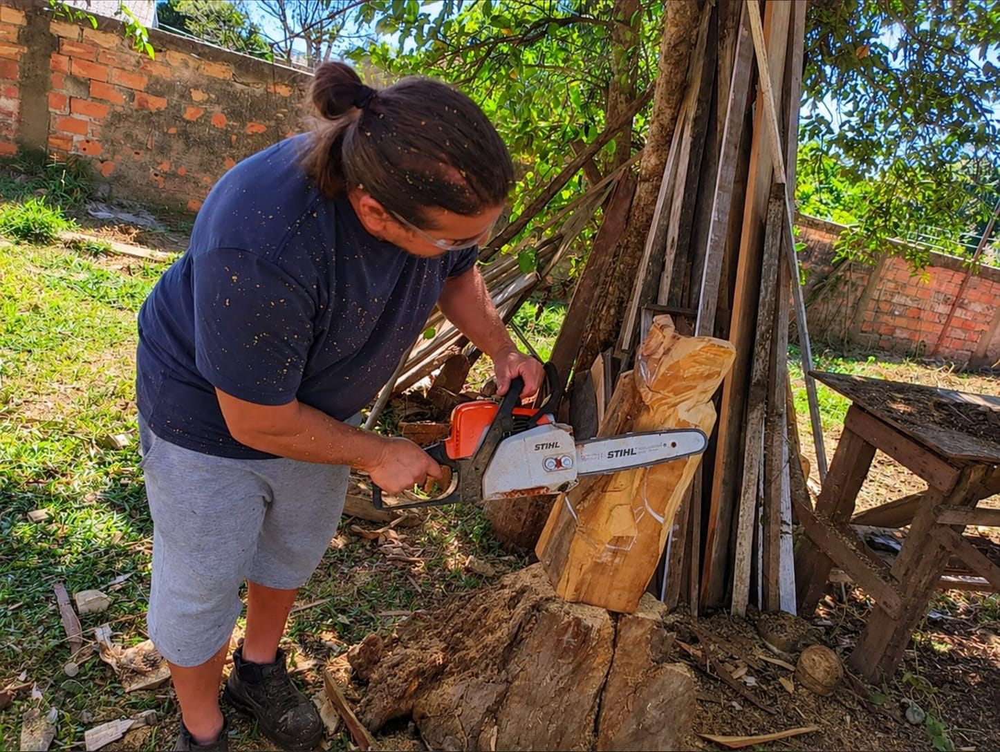
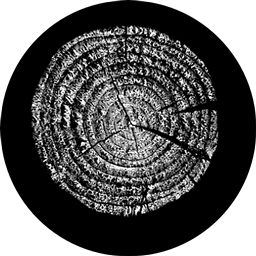
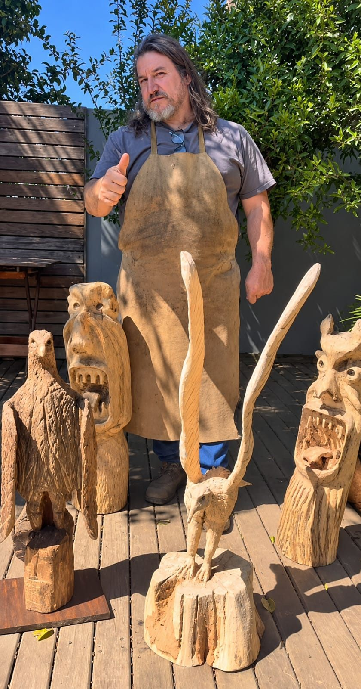
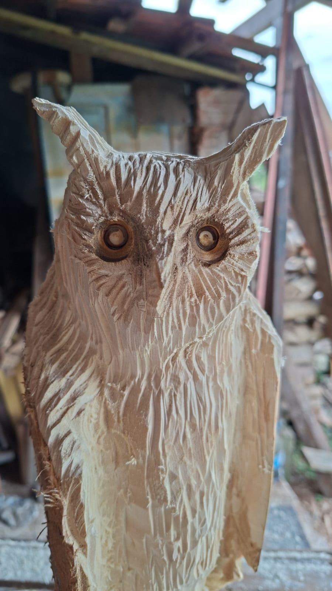

o porquê do nome
seraarte
- 1. ser a arte; existir, sentir, expressar, criar.
- 2. habitar o mundo traduzindo o indizível.
etim.: Ser(gio) + ser + a arte.

o artesão
Sérgio
Gresczeschen
Da madeira bruta à peça acabada: esculturas, móveis orgânicos, utilitários e placas entalhadas.
- 07Esculturas
- 03Peças utilitárias
- 01Placa personalizada

Sérgio Gresczeschen
acervo
Obras
Águia Alçando Voo
Águia em madeira clara flagrada no instante da decolagem: asas erguidas na vertical, cauda aberta e cabeça projetada à frente. As penas são marcadas em entalhes profundos, e a base de tronco mantém a casca natural.
Bugre
Grande busto em madeira escura e envelhecida. Rosto alongado de olhos claros e boca entreaberta, com cabelos em lâminas largas que parecem levados pelo vento. As rachaduras naturais da madeira fazem parte da obra.
Mesa Orgânica
Tampo de fatia de tronco com contorno natural, em que aparecem dois centros de crescimento lado a lado. O pé esculpido em forma de ampulheta termina em apoios curvos, e o acabamento realça os veios.
Coruja
Coruja de orelhas eretas e olhos circulares em relevo, com a plumagem entalhada em camadas e tons tostados que dão profundidade ao corpo. Repousa sobre uma base de madeira clara.
Águia Contemplativa
Águia em madeira escura pousada sobre um toco, de asas recolhidas e cabeça voltada para o alto. O bico em tom claro contrasta com a textura entalhada das penas.
Cumbuca Estilo Folha
Cumbuca esculpida em formato de folha, com nervuras entalhadas e a ponta levemente curvada. O acabamento brilhante revela os veios e as variações de cor da madeira.
Marinheiro de Charuto
Rosto barbudo esculpido em tronco, com boné de marinheiro e o charuto preso nos lábios. Nariz marcante, olhar sereno e uma barba longa, feita de entalhes que se espalham pelo tronco.
Carranca Mostrando a Língua
Carranca em madeira clara, de orelhas arredondadas, nariz largo e boca escancarada, com os dentes à mostra e a língua para fora. Uma peça brincalhona e cheia de expressão.
Tábuas de Churrasco
Tábua de bordas arredondadas com rebaixo central e acabamento envernizado, que realça o desenho dos veios. Tem alças metálicas laterais para servir direto à mesa.
Cartola de Óculos Escuros
Rosto alongado em madeira clara com cartola e óculos escuros em preto, sobre uma base de tronco escuro. Expressão séria e muita personalidade.
Sítio Asa Branca
Placa com o nome em letras de alto-relevo e uma pomba de asas abertas, com as penas entalhadas uma a uma. O contorno recortado acompanha o desenho da peça.
sob encomenda
Placas
personalizadas
O nome do seu sítio, da sua casa ou do seu negócio, entalhado em madeira.
Pedir orçamentocontato
Vamos dar forma
à sua ideia?
Para comprar uma peça do acervo ou encomendar um trabalho, fale diretamente com o Sérgio.
Conversar no WhatsApp- WhatsApp(47) 9705-0270
- Instagram@ser.aarte
- AteliêCanoinhas · SC